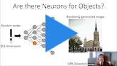
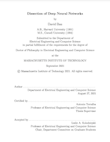
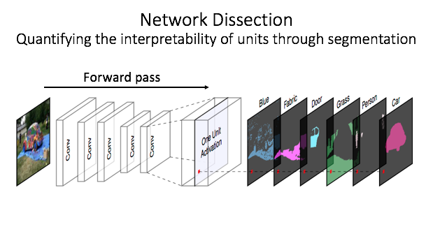
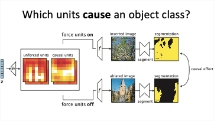
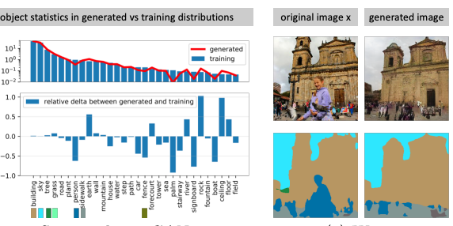
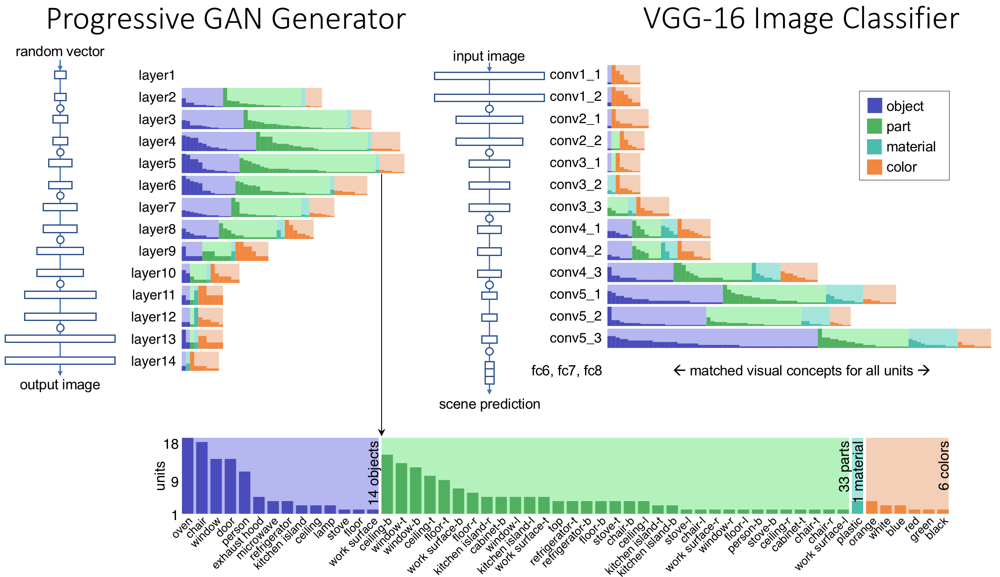
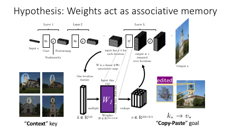

Defense Video
(Youtube)
Defense Slides
(Powerpoint)

Dissertation
(PDF)

Network Dissection
(CVPR 2017)

GAN Dissection
(ICLR 2019)

Seeing Omissions
(ICCV 2019)

The Role of Units
(PNAS 2020)

Rewriting Rules
(ECCV 2020)
A deep network learns its own computations, so we cannot ask a programmer to explain the reasons for the specific calculations that a network happens to do. But what if we could ask the network itself what it is thinking?
One of the great challenges of neural networks is to understand how they work. Because a deep network is trained by an optimizer, we cannot ask the programmer why the network does the specific calculations that it does. So we have traditionally focused on testing a network's external behavior, ignorant of insights or flaws that may hide within the black box.
But what if we could ask the network itself what it is thinking? Inspired by classical neuroscience research on biological brains, I introduce methods to directly probe the internal structure of a deep convolutional neural network by testing the activity of individual neurons and their interactions.
Beginning with the simple proposal that an individual neuron might represent one internal concept, we investigate the possibility of reading human-understandable concepts within a deep network in a concrete, quantitative way: Which neurons? Which concepts? What role do concept neurons play? And can we see rules governing relationships between concepts?
Following this inquiry within state-of-the-art models in computer vision leads us to insights about the computational structure of those deep networks that enable several new applications, including "GAN Paint" semantic manipulation of objects in an image; understanding of the sparse logic of a classifier; and quick, selective editing of generalizable rules within a fully trained StyleGAN network.
In the talk, we challenge the notion that the internal calculations of a neural network must be hopelessly opaque. Instead, we strive to tear back the curtain and chart a path through the detailed structure of a deep network by which we can begin to understand its logic.